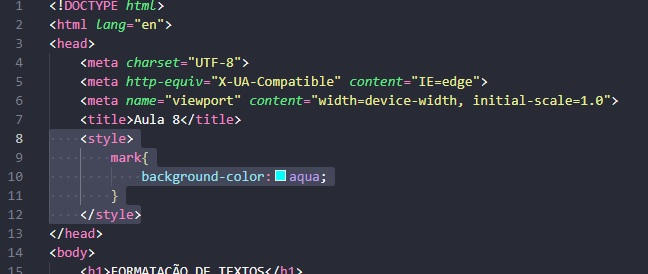

Nesta frase temos um termo em NEGRITO usando a tag B (não semântica)
Nesta frase, temos um termo em DESTAQUE usando a tag STRONG (semântica)
Nesta frase temos um termo em ITÁLICO usando a tag I (não semântica)
Nesta frase, temos um termo em ÊNFASE usando a tag EM (semântica)
Com a tag MARK conseguimos marcar um texto
Para mudar a cor dar marcação, usa-se o parâmetro de CSS "style" dentro da tag MARK. Onde consegue alterar a cor apenas daquela tag.

Outra forma de mudar a cor da marcação é criar um seletor para a tag MARK.O seletor normalmente é usado no head e serve para padronizar estilos e formas de outras tags.
Estamos criando um texto maior e um texto menor neste parágrafo.
Existia a tag STRIKE (não semântica, que foi descontinuada). Hoje temos o DEL, onde significa que o texto está ali, pode até ser lido, mas deve ser desconsiderado.
Existia a tag U (não semântica, que foi descontinuada). Hoje temos o INS, onde significa que estamos dizendo que o texto está ali, deve ser lido e você deve prestar atenção nele
Sobrescrito para inserir coisas do tipo: x20+3 (xis elevado a 20 mais 3)
Subscrito para iserir coisas do tipo: H2O